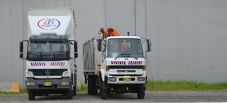
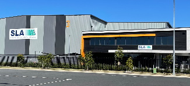
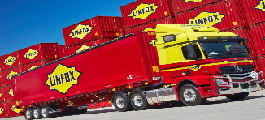
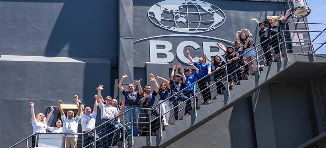
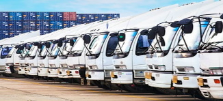
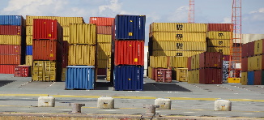
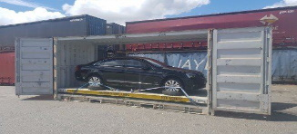

Company Overview
 it has wheels we can move it. Large, small, light or heavy, commercial, corporate or private, Auto Mover car transporters, have a vehicle relocation solution for you. Established in 2006 and expanding both services and geographical reach in 2010, Auto Mover continue to rise to market demand and reputation as one of the nation’s most trusted vehicle transport companies in operation today
it has wheels we can move it. Large, small, light or heavy, commercial, corporate or private, Auto Mover car transporters, have a vehicle relocation solution for you. Established in 2006 and expanding both services and geographical reach in 2010, Auto Mover continue to rise to market demand and reputation as one of the nation’s most trusted vehicle transport companies in operation today Read More

ITS Transport is a business to business Sydney Metropolitan transport supplier. We are open Monday to Friday 6:30am – 6pm but also offer a 24 hour/7 days a week availability hotline with an extensive range of specialised vehicles to solve our customers transport requirements.
You can expect the most technologically advanced service available today, including “Intellitrac” GPS Satellite Navigation system. Read More
You can expect the most technologically advanced service available today, including “Intellitrac” GPS Satellite Navigation system. Read More

Founded in 1993 to provide a single customer with a Brisbane distribution depot, Specialised Logistics Australia, (SLA) has had rapid and continuous expansion allowing us to specialise in third party logistics.
SLA is now strategically positioned to provide dozens of interstate freight companies, importers and local manufacturers comprehensive warehousing and distribution support.
Read More
Read More

In 1956, founder Lindsay Fox started Linfox with one truck in Melbourne, Australia. More than 60 years later, we have grown to become Asia Pacific’s largest privately-owned logistics company, involving more than 24,000 people across 12 countries.Lindsay Fox began Linfox in Melbourne in 1956 with one truck delivering soft drinks in the summer months and fuel in winter.
Read More
Read More

BCR is an international and domestic freight forwarding company and third-party logistics (3PL) provider that has served Australian-based companies and multinationals with customised solutions across every Founded in 1892, BCR is still family run and owned, headquartered in Sydney. We’re a passionate logistics and 3PL provider that puts customers first
Read More
Read More

Starting out as part of the Winton Transport Group in 1998 we have now expanded into our own stand alone identity trading as Warehousing and Logistics Australia. Fully owned by Viral Kodinariya who remains active in the day to day operations. Viral has built a team of dedicated workers who have been in warehouse and logistics for many years Read More
GKR Transport is a privately owned and operated company, specialising in the supply of transport, storage and logistics services to a wide range of industries. Having opened our doors in 1985, we are vastly experienced in providing practical and affordable solutions to our clients, who include companies in the automotive, industrial, heavy haulage, oil & gas, mining, and manufacturing sectors.
Read More
Read More

Australia Freight and Logistics is operating in Australia, New Zealand, USA, China, Europe and Asia. Our passion is driving success to our clients. Our passionate and dedicated team will track your shipment from start to finish. AFL offers freight, transportation and warehousing services in Australia and overseas .Contact no:+61 421 144 805
Address:14 Toorak Rd, South Yarra VIC 3141, Australia
Website:http://australiafreightlogistics.com/
Read More
Read More

CTI Logistics Interstate formerly known as Jayde Transport is an Australian Freight Transport Company, which specialises in the provision of road and rail interstate transport services, wharf cartage and container handling, as well as warehousing and distribution.Established in 1978 as an interstate freight forwarder in Perth.We have the facilities, resources, and personnel to deliver premium freight and logistics services throughout Australia
Read More
Read More